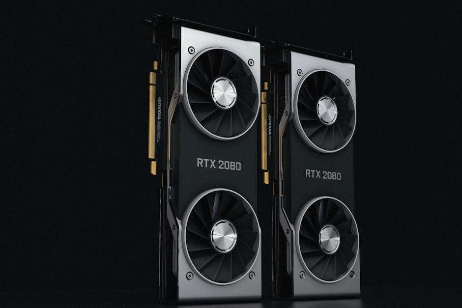
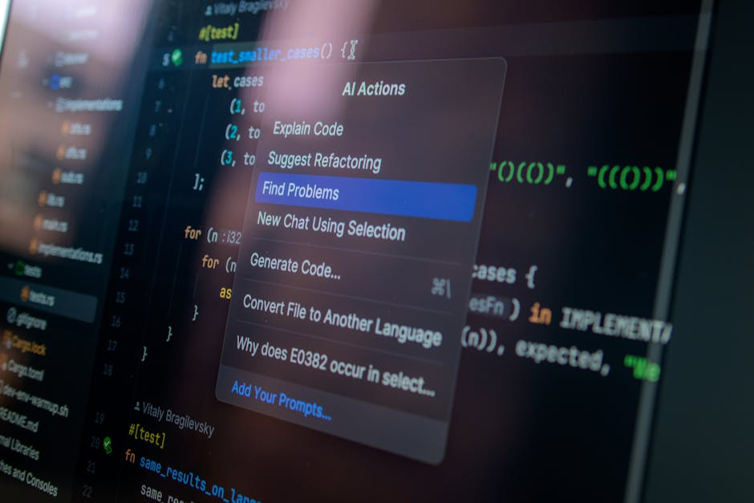
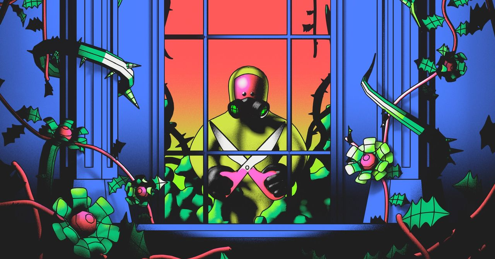
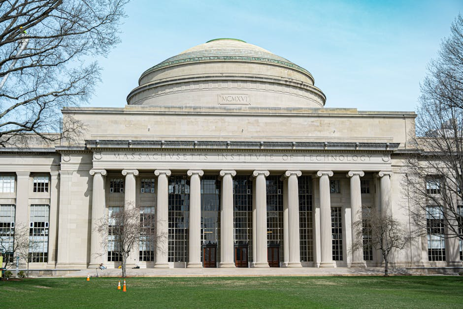

AI DAILY
AI 行业日报
2026年3月17日 · 精选 10 条
01行业动态
英伟达GTC 2026：200亿美元"窃壳"Groq，切开推理算力蛋糕

英伟达即将在GTC 2026上发布基于SRAM的专用推理芯片，底层技术来自其200亿美元收购Groq核心资产的交易——包括全部核心专利和创始人Jonathan Ross在内的200多名工程师。
英伟达采取"资产收购+技术授权+核心团队挖角"模式绕开反垄断审查，Groq空壳仍作为独立实体存在。思科预测到2027年，75%的AI工作负载将转向实时推理。
INSIGHT
黄仁勋的算盘是"算力阶级分化"——GPU锁训练底座，LPU收割推理市场。当裁判亲自下场做专用芯片，靠"推理比GPU快X倍"融资的初创公司，生存空间被焊死了。
02技术突破
315曝光"AI投毒"：虚构产品如何骗过大模型推荐
央视315晚会揭露AI"投毒"产业链：记者用一款"力擎GEO优化系统"软件，为一款根本不存在的智能手环生成十几篇软文发布到各平台，几天后多个AI大模型竟将其列入推荐榜单。
GEO（生成式引擎优化）通过三条技术路径操控AI：训练数据污染（篡改公开信息源）、检索上下文劫持（批量占位RAG检索结果）、提示注入诱导（伪造差评和对比评测）。
INSIGHT
从SEO到GEO，搜索优化的灰产正在向AI迁移。区别在于：SEO操控的是排名，GEO操控的是AI的"认知"——当大模型把虚假信息当事实输出，用户连怀疑的入口都没有。
03产品发布
DeepSeek推迟V4：梁文锋要根治大模型的"健忘症"
据外媒报道，DeepSeek V4将是架构级重构，包含1万亿参数、百万上下文、原生多模态，预计4月发布。核心升级是LTM（长期记忆），一套在模型架构内部实现持久化记忆的系统。
梁文锋署名的Engram论文已证明：可在Transformer内部开辟专用记忆空间，用O(1)哈希查找存取知识，不占上下文窗口、不增加推理成本，且容量可近乎无限扩展。腾讯姚顺雨的CL-bench测试显示，当前所有前沿模型从上下文学习的平均正确率仅17.2%。
INSIGHT
当前所有记忆方案都是"外挂"——模型在读别人整理的笔记，不是真正记住。V4要走的是"原生记忆"：把记忆嵌入架构本身。如果跑通，这是模型从"工具"变成"可成长智能体"的分水岭。
04产品发布
智谱发布GLM-5-Turbo：首个Coding Agent特供模型

智谱发布GLM-5-Turbo，深度优化了复杂工作流中的工具调用与多智能体协同能力。在智谱自建的ZClawBench测试中取得国产模型综合第一。配套推出龙虾套餐，39元获得4000万Token。
实测中，GLM-5-Turbo能在Coding Agent框架内完成小红书7天连载策划、全栈记账应用开发（含自动检测环境并切换技术栈）、跨平台电商数据清洗等长路径复杂任务，全程不掉链子。
INSIGHT
模型厂商开始为Coding Agent专门优化，说明"模型能力"的定义正在从"跑分高"转向"干活稳"。当Agent成为主要调用者，模型竞争的维度从智商转向了工程可靠性。
05融资收购
地瓜机器人完成1.2亿美元B1轮，两轮累计2.2亿
地瓜机器人完成1.2亿美元B1轮融资，滴滴、美团龙珠等产业资本入局，高瓴、淡马锡等老股东超额跟投。两轮融资总额达2.2亿美元。
地瓜以5~560 TOPS全算力段产品布局，横跨人形机器人、四足机器狗、无人机、物流AMR等全场景，已助力云鲸逍遥002、影石全景无人机等多个爆款产品落地量产。
INSIGHT
地瓜的定位是"机器人行业的Wintel"——不造机器人，造机器人的大脑。当机器人品类从扫地机扩展到人形、四足、无人机，通用计算平台比单一产品更有规模化杠杆。
06产品发布
OpenAI"成人模式"延期：只做文字，不做图片
OpenAI的ChatGPT"成人模式"预计首发时仅支持文字情色对话，不支持图片、语音或视频生成。该功能原定本季度上线，因内部安全顾虑已延期，新时间表尚未公布。
延期原因包括：顾问委员会警告该功能可能助长不健康的情感依赖；OpenAI年龄预测系统曾将约12%的未成年人误判为成人——考虑到ChatGPT每周有1亿未成年用户，意味着数百万未成年人可能接触到色情内容。
INSIGHT
只做文字不做图片，绕的是英国《在线安全法》对色情图片的年龄验证要求。12%误判率乘以1亿周活，是千万量级的风险敞口。内容安全的难度不在技术，在于错误率乘以用户规模后的绝对数字。
07观点评论
COBOL：编程语言中的"石棉"

COBOL诞生于1959年，是史上应用最广泛的编程语言——截至2000年，全球3000亿行代码中80%是COBOL。如今它仍支撑大量政府和金融系统，每天处理约3万亿美元的金融交易。
新冠期间，新泽西州因COBOL开发者严重短缺，无法及时更新失业保险系统。据估算COBOL低效在2020年给美国GDP造成1050亿美元损失。但即便如此，该州新系统后端仍然运行在COBOL主机上。
INSIGHT
Wired把COBOL比作"数字石棉"——曾经无处不在，如今危险地难以移除。最讽刺的是，这门语言当初的设计目标是让"非程序员也能编程"，结果60年后，它成了只有极少数人能维护的遗产。
08技术突破
MiroMind发布重型推理智能体，预测黄金价格误差0.08%
陈天桥带队的MiroMind发布MiroThinker-1.7系列，其中MiroThinker-H1在BrowseComp（88.2%）、GAIA-Val-165（88.5%）等多项深度研究基准上刷新SOTA，超越Gemini-3.1-Pro、GPT-5.4-Thinking。
实测中，MiroThinker提前15天预测黄金价格，预测值$5185/oz，实际报价$5181-$5206，误差仅0.08%。F1上海站比赛中，模型在最后30分钟的排名预测与最终结果完全一致。
INSIGHT
当其他厂商都在卷推理速度，MiroMind反其道而行——用1-2分钟的等待换取更深的推理链。跑分不难，难的是在金融预测这种没有标准答案的场景里拿出可验证的结果。
09技术突破
1.4亿宝可梦玩家给AI免费打工：300亿张图像训练机器人导航
Niantic十年间通过《精灵宝可梦Go》收集了300亿张带精准地理标签的实景图像——1.4亿玩家以为在抓皮卡丘，实际参与了全球众包测绘项目。
这些数据训练出VPS视觉定位系统，实现厘米级精准定位，已落地Coco Robotics配送机器人——1000台机器人在美欧运营，完成超50万次配送。在GPS失效的城市峡谷场景，VPS直接接管导航。
INSIGHT
"如果某样东西是免费的，那你就是商品。"Niantic从第一天就把众包测绘写进核心战略——游戏是数据采集网络，娱乐是空间智能基建。巅峰估值90亿美元，靠的不是游戏收入，是这套数据飞轮。
10技术突破
MIT推出RandOpt：不用调参，随机加噪声就能媲美PPO

MIT研究发现预训练模型权重周围密集分布着大量"专家模型"（神经丛林现象）——只需向模型参数添加高斯噪声，无需迭代、无需梯度，就能找到擅长特定任务的版本。
基于此提出RandOpt算法：随机扰动N次→筛选K个最优→多数投票集成。实测在数学、编程、写作上与GRPO/PPO相当甚至更优，视觉-语言模型准确率从56.6%涨到69.0%。模型越大效果越好。
INSIGHT
一个反直觉的发现：预训练做得够好的模型，周围本来就"长满"了各种任务专家，不需要复杂调参去训练出来。这对"后训练"范式是个根本性的质疑——也许最好的专家，一直就在那里。
由 Zayen知览 整理 · 构建者视角